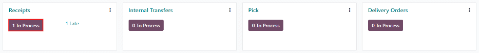
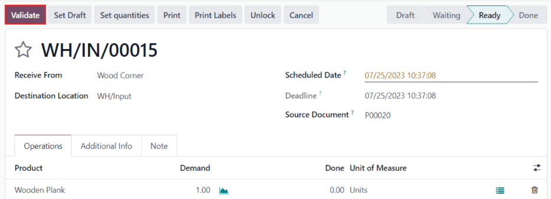
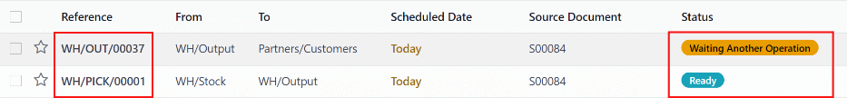

Procesar recepciones y entregas en dos pasos¶
Dependiendo de los procesos de negocios de una empresa, es posible que deba seguir varios pasos antes de empezar a recibir y enviar productos. En el proceso de recepción en dos pasos, se reciben los productos en un área de entrada y luego se transfieren a las existencias. Las recepciones en dos pasos son más convenientes cuando usa varias ubicaciones de almacenamiento, como zonas restringidas o aseguradas, congeladores y refrigeradores, o varios estantes.
Puede organizar los productos de acuerdo al lugar en donde se guardarán, y los empleados pueden almacenar todos los productos en una ubicación específica. Los productos no estarán disponibles para ningún otro proceso hasta que se transfieran a las existencias.
En el proceso de envío en dos pasos, los productos que son parte de una orden de envío, se recolectan del almacén de acuerdo a su estrategia de remoción, y se llevan a la ubicación de salida antes de enviarse.
Un caso en el que esto es muy útil es al usar las estrategias de remoción FIFO, UEPS o PEPS, donde los productos a recolectar deben seleccionarse según su fecha de recepción o su fecha de vencimiento.
Odoo está configurado de manera predeterminada para recibir y enviar bienes en un paso, por lo que debe cambiar la configuración para utilizar las recepciones y envíos en dos pasos. Los envíos entrantes y salientes no necesitan establecerse para que tengan los mismos pasos. Por ejemplo, puede recibir productos en dos pasos, pero enviarlos en un solo paso. En el siguiente ejemplo, se usarán los dos pasos tanto para recepciones como para envíos.
Configure rutas multietapa¶
Primero, asegúrese de tener activada la opción Rutas multietapa en , en la sección Almacén. Después de activar la opción, haga clic en Guardar para guardar los cambios.
Nota
Activar la opción Rutas multietapa también activará la función de Ubicaciones de almacenamiento.

Luego, configure el almacén para la recepción y la entrega en dos pasos. Vaya a y haga clic en el almacén para cambiar sus ajustes.
Después, seleccione Recibir bienes en la ubicación de entrada y luego llevar a existencias (2 pasos) para los envíos entrantes y Enviar bienes a ubicación de salida y enviar (2 pasos) para los envíos salientes.
Truco
Al activar las recepciones y los envíos en dos pasos, se crearán ubicaciones nuevas de entrada y de salida, las cuales tendrán los nombres predeterminados de WH/Entrante y WH/Saliente respectivamente en el tablero de Ubicaciones. Para modificar el nombre de estas ubicaciones, vaya a y seleccione la ubicación que desea cambiar. En el formulario de la ubicación, actualice el Nombre de la ubicación y haga otros cambios si son necesarios.
Procesar un recibo en dos pasos (entrada + inventario)¶
Crear una orden de compra¶
En el tablero de la aplicación principal , comience creando una nueva cotización haciendo clic en Nuevo. Luego, seleccione (o cree) un Proveedor desde el menú desplegable del menú, agregue un Producto almacenable a las líneas de orden, y haga clic en Confirmar orden para finalizar la cotización y quede como una nueva orden de compra.
Importante
Para empresas con varios almacenes que tengan una configuración diferente, es posible que deba especificar el campo Enviar a en el formulario de la orden de compra como la ubicación de entrada correcta conectada al almacén de dos pasos. Esto lo puede hacer si selecciona el almacén desde el menú desplegable que incluye la etiqueta Recepciones al final de su nombre.
Después de confirmar la orden de compra, aparecerá un botón de Recepción en la parte superior del formulario de la orden de compra. Haga clic sobre él para mostrar la recepción asociada.
Truco
También puede encontrar los recibos de las órdenes de compra en la aplicación . En la Vista general del tablero, haga clic en el botón # Por procesar en la tarjeta kanban de Recepción.
Procesar la recepción¶
La recepción y el traslado interno se crean cuando se confirma la orden de compra. El estado de la recepción será Listo, ya que la recepción se debe procesar primero. El estado del traslado interno será En espera de otra operación, ya que la transferencia no puede ocurrir hasta que la recepción esté completa. El estado del traslado interno cambiará a Listo solo si la recepción se marcó como Hecho.
Haga clic en la recepción asociada con la orden de compra y luego haga clic en Validar para completar la recepción y mover el producto a la Ubicación de entrada.
Procesar el traslado interno¶
Una vez que el producto ya esta en la Ubicación entrante, el traslado interno está listo para que el producto ingrese a las existencias. Vaya a la aplicación y en la Vista general del tablero, haga clic en el botón inteligente # Por procesar en la tarjeta kanban de Traslados internos.
Haga clic en el traslado asociado con la orden de compra, luego haga clic en Validar para completar la recepción y el movimiento del producto a las existencias. Una vez que validó el traslado, el producto entra a las existencias y aparecerá como disponible para realizar envíos a los clientes o para ordenes de fabricación.

Procesar una orden de envío en dos pasos (recolección + envío)¶
Crear una orden de venta¶
Cree una nueva cotizaciónn la aplicación . Haga clic en Nuevo, seleccione (o cree) un cliente, agregue un producto almacenable a las líneas de la orden y haga clic en Confirmar.
Después de confirmar la orden de ventas, aparecerá un botón inteligente de Envío en la parte superior del formulario de la orden de ventas. Haga clic sobre él para que aparezca la recepción asociada.
Truco
También puede encontrar las recepciones de las ordenes de ventas en la aplicación . En la vista general del tablero, haga clic en el botón inteligente de # Por procesar en la tarjeta kanban de Recolecciones.

Procesar la recolección¶
Se crearán las ordenes de recolección y envío una vez confirmada la orden de ventas. Cuando aparezca el botón inteligente de Envío, haga clic en él para que aparezca el tablero de Traslados, en el cual aparecen tanto las ordenes de recolección como las de envío.
El estado de la recolección será Listo ya que debe recolectar el producto de las existencias antes de que pueda enviarlo. El estado de la orden de envío será En espera de otra operación, pues no es posible realizarlo hasta que la recolección esté completa. El estado de la orden de envío cambiará a Listo una vez que la recolección se marcó como Hecho.
Haga clic en la orden de recolección para comenzar a procesarla. Si el producto tiene existencias disponibles, Odoo las reserva de forma automática. Haga clic en Validar para marcar la recolección como Hecho; de esta manera la orden de envío estará lista para procesarse. Ya que los documentos están vinculados, los productos que se recolectaron con anterioridad se reservan en automático en la orden de envío.
Procesar la entrega¶
La orden de envío estará lista para procesar una vez que se complete la recolección. Lo puede ver en la Vista general del tablero de la aplicación . Para comenzar, haga clic en el botón inteligente de # Por procesar en la tarjeta kanban de las ordenes de envío.
Truco
Puede acceder rápidamente a la orden de envío asociada con la orden de ventas si hace clic de nuevo en el botón inteligente de Envío y selecciona la orden de envío en la página de traslados (la cual tendría que aparecer como Listo).
Haga clic en la orden de envío asociada con la orden de ventas, luego haga clic en Validar para completar el movimiento.
Una vez validada la orden de envío, el producto deja su ubicación de WH/Salida en el tablero de traslados y se mueve a la ubicación de Contactos/Clientes. Luego, el estado del documento cambiará a Hecho.